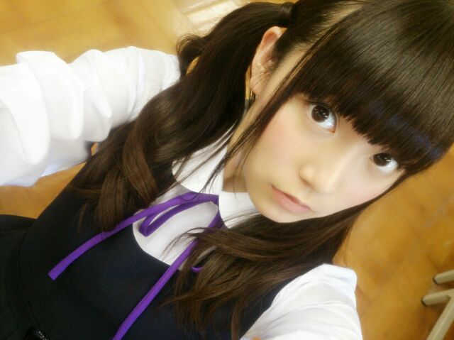
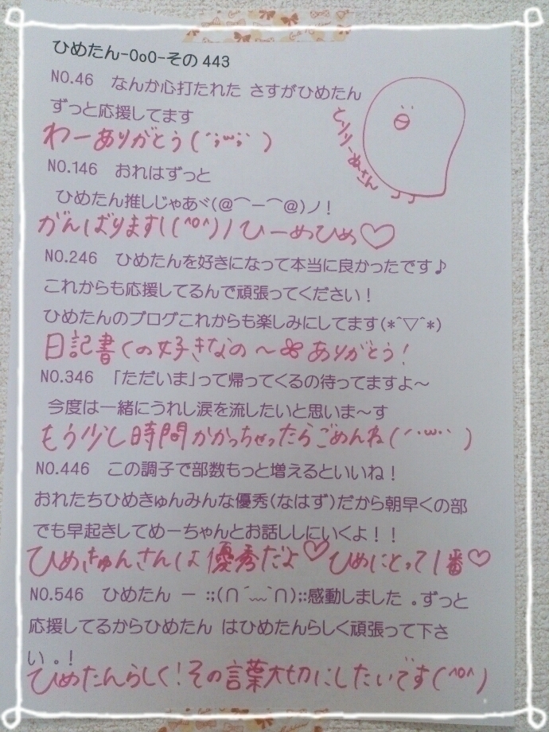

| 2014/09 06 Sat | ひめたん-OoO-その476 |
みさせんぱいに
にのうで食べられる事件発生＼(^o^)／

ひめたん満更でもなさそう＼(^o^)／＼(^o^)／＼(^o^)／
みさせんぱい愛しちょんよ～
お味はいかがかしら～
またおうち遊びに行きたいな♡
のぎ天更新されたよ＼(^o^)／
ひめたんの寝起きの良さねー
いやほんとにひめたんは常々言ってるけど
すーぱー寝起き良いからね！
6:00に起きたくて目覚ましセットしたら
5:50に目覚ましよりも先に目が覚めるとか
ざらにある子なんですよ～
かなりんぺろぺろー♡
パジャマトークもしてたけど
何あたしたちのちーむの会話不毛すぎる(笑)
あれファンのみなさんの求めてる
会話じゃないよね絶対に( ºωº )
まあでもみんな ほののーん てしてるし
お年頃のおにゃのこの会話なんて
所詮そんなもんだよ......んー

玉子焼き甘い派のひとー( ´ ▽ ` )ﾉ？
次回はお寺へしょうぎょう(笑)
お楽しみに～＊
アニカンRヤンヤン!!Summer特別号の発売日が
延期して9月4日になったということで
やっとこさ発売されました(゜ω゜)
寧々、中田、能條、中元で
アンダーライブについて
語ってきましたよー
ぜひチェックしてみてください☆
最後に∩(・ω・)∩

10thシングルのジャケ写の制服！
公式のとはまた違うのよー
今日はいつもより
若干多めの質問返し～ぱやぱや～

 ひめたんは微積分得意ですか？
ひめたんは微積分得意ですか？
( ºωº )硬直
ひめたん！今度初めて全握いこうと思うんだが
なに話せばいいか分からんよ〜
ひめたんなに話せばいいんだ〜〜〜？
ありがとうー嬉しいー∩(・ω・)∩
何でもいーんだよー
はじめて覚えたドイツ語でもいいし
いちばんすきなぷりん屋さんでもいいし
何でもいいの～待ってるよー☆
乃木のの久しぶりだなぁ
ひめたんは1人ラジオとかやってみたい？
やってみたい！
ひめたんラジオ好きなんですよー(^o^)♡
あのね声を使ったお仕事にもともと興味があったり
お話するのとか原稿読むのとか好きなのと
あとはビジュアルに自信がない分
声だけって惹かれる←おい
ひめたんはテストの前日は夜更かしして勉強派？
それとも早起きして勉強派？
朝派だな～
一通り眠気覚まししてみても眠いーってなったら
もう何しても頭に入んないよ
え？そうです出来ない人間の言い訳です
それにひめたんは朝に強い体質らしい。
今度体育でバスケやろうと思うんだけど
壁に激突しない方法教えてひめたん！
いやいや普通にやってたら
ぶつかんないよまして壁なんて......
(・ω・)ん？
ひめたんはひとカラ行ったら
乃木坂の曲歌いますか？？
いつもはあえて歌わないんだけど
この前行ったときは1.5時間くらい
乃木坂メドレーしたよ
どれもおにゃのこには歌いやすいキーだと思う\❁/
そーいえばひめたん料理の腕前はどーなんですかー？
上手い下手以前に
あんまり料理しないんだよね
最近は玉子焼き作ってままに褒められたよ～
とても高校3年生の発言には思(´；_；｀)ﾌﾞﾜｯ
先日妹にかわいい女の子の赤ちゃんが産まれまして
かわいくて仕方ありません
しばらくは赤ちゃん赤ちゃんひめたん赤ちゃん
みたいな感じだけど
きゅんきゅん王国から追い出さないでね
ぎゃーーーそれは一大事！！！
そりゃ赤ちゃんは可愛いよ
ひめたんと赤ちゃんを天秤にかけられたら
たまったもんじゃないよーー
ってことでひめたんにも
赤ちゃんよしよしさせてください
室内の寒いエアコンの風と、
ひめたんびーむしたらひなちまに真顔で
平手打ちされるの、どっちが嫌ですか？
ひなちまにビンタなんてされたら
どーせみんなは嬉しくて
にやにやしちゃうんでしょ( ºωº )ひめ知ってるもん
いーもんみんなのかわりに私が受けるから......って
そんな趣味もないんですが。
ひめたんって
髪型でツインの他に
最近気になってる髪型とかあるー？
乃木どこのルス告の時にやってた
片方にお花つくるやつ！
ねぇ～
ひめたんのことが好きすぎるよ!!
どぉ～したらいぃの？
あらーどうしよう♡
ひめたんもすきー(っ´ω`c)らぶ♡♡
ひめたんの日記の
コメント欄下２ケタに46を踏んだ方へ
手書きでコメ返するコーナー
＼ ひめたん46 ／



いつもたくさんのコメント
ありがとうございます
アンダーライブ申し込んだよってひと
たーくさんいらっしゃって嬉しい！
みんな当選しますように( ˇωˇ )
あ、そうそうめーるのお返事で
ぱぱ・ままお誕生日おめでとうってコメント
たくさんありがとうねー伝えておくね～＊
そして明日は朝から
撮影頑張ってくるから応援しててね∩(・ω・)∩
みんなは日曜日だからおやすみかなー？
(＊´・ω・＊)
コメント(826)
2014/09/06 23:42